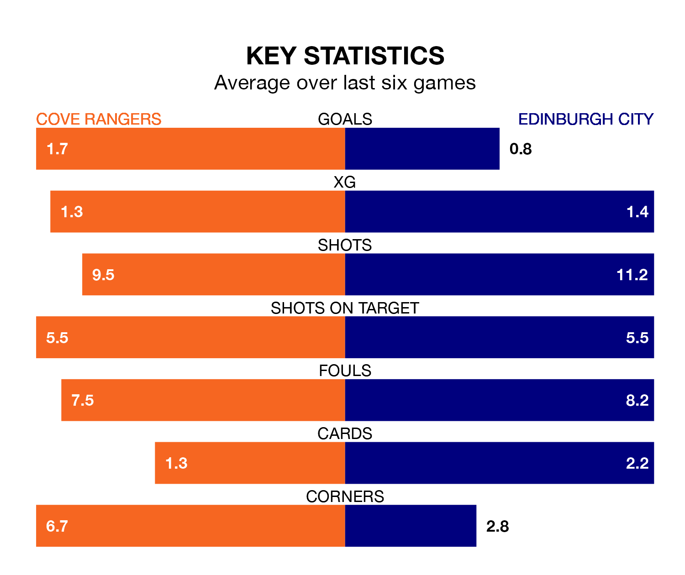

Cove Rangers are heavy favourites to keep all three points at home in Saturday's kick-off against Edinburgh City.
The Wee Rangers, who sit fifth in League One with 35 games played, are priced at 1.4 to seal victory at the Balmoral Stadium.
Sitting five places and 32 points behind them in the table, Edinburgh are 6.0 to win with *Betting Company*, while the draw is at 4.6.
In Rumarn Burrell, Cove have one of the league's most on-form strikers so far this season. He has notched 21 goals in 34 appearances, to sit second in the scoring charts.
His goal rate of one every 137 minutes is slightly quicker than that of Robert Mahon, Edinburgh's top scorer with a goal every 137 minutes, and a total of seven goals in 16 games.
With 37 goals in 35 games so far this season, City are the league's lowest scorers with 1.1 goals per game. And they are conceding more than average, letting in 95 goals at a rate of 2.7 per game.
Rangers, meanwhile, are average scorers, with 1.6 goals per game. They have conceded 1.8 goals per game.
The Wee Rangers are in bad form in League One, with one win and five losses from their last six games.
And also with a win and five losses over that period, the visitors' form is identical – they have both taken three points from 18.
In the last 10 years, Cove and Edinburgh have played each other on eight occasions. Cove won four of them, Edinburgh two, and they drew twice.
On average, the Wee Rangers scored 2.5 goals and Edinburgh 1.4 in those matches.
Their last meeting was on March 2, when Cove won 2-0 away.
Cove's last match was on April 27, a 2-0 loss against Queen of the South.
Edinburgh lost 3-1 against Stirling Albion last time out, also on April 27, with Oliver McDonald on the scoresheet.
Updated: 12:00 (UTC), 02/05/24